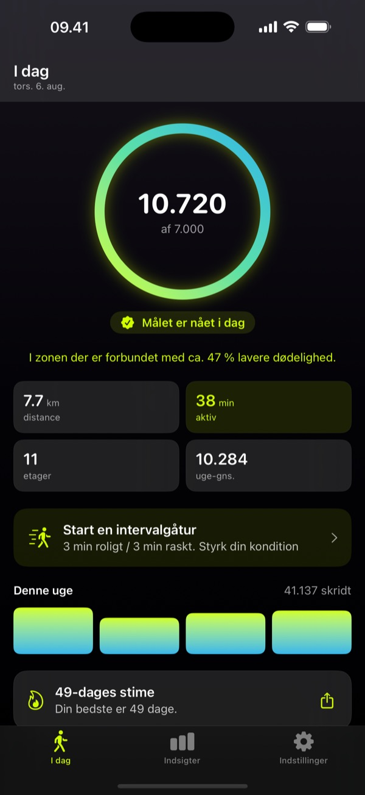
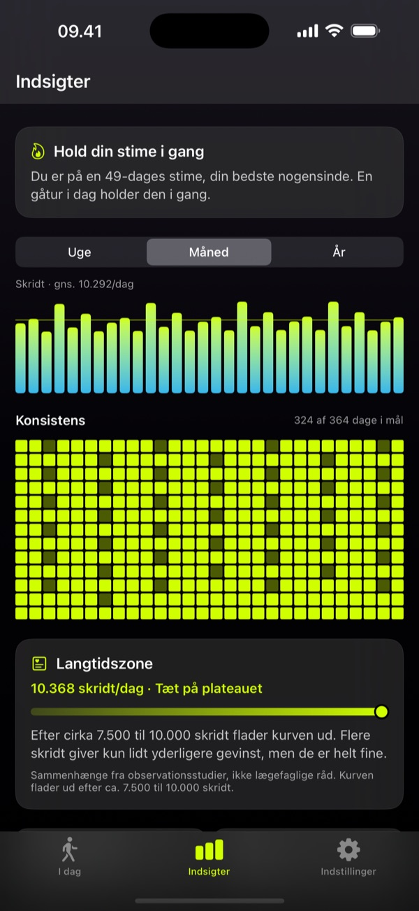
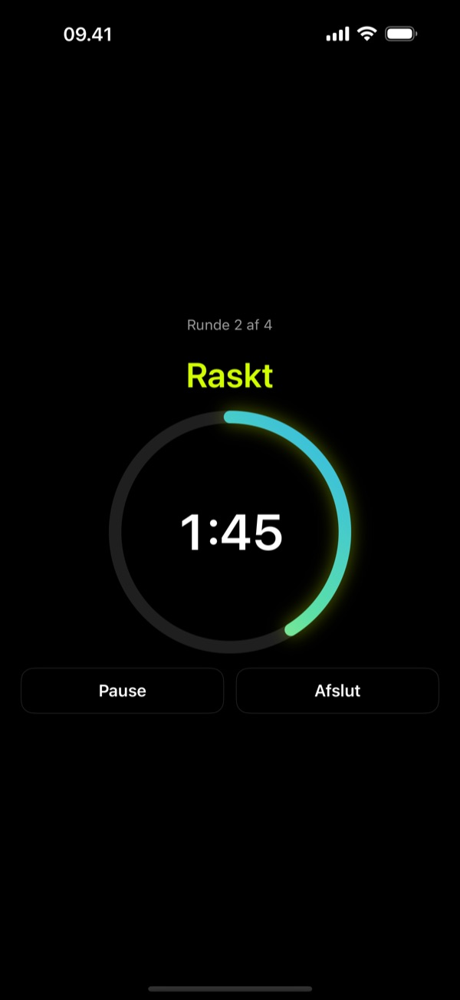

Hvert skridt tæller.
Walkful gør dine daglige gåture meningsfulde, roligt og helt privat på din telefon. Apple Health giver dig tallene; Walkful giver dem mening.
Gratis at hente. Walkful Pro låser de dybere funktioner op med ét køb, aldrig et abonnement. Til iPhone med iOS 18 eller nyere.
Sådan ser aflæsningen ud i Walkful. Tallene beskriver sammenhænge på tværs af store grupper, ikke en forudsigelse om dig. Lancet Public Health, 2025.
Smuk funktionalitet til din dag



Gratis at hente. Pro hvis du vil have mere.
Alt det du skal bruge for at følge dine gåture er med i den gratis app. Walkful Pro lægger de dybere dele til, for én betaling, aldrig et abonnement.
I den gratis app
Dagens skridt sammen med hvad de betyder for dit helbred, plus distance, aktive minutter, etager, ugen på ét blik og din stime. Widgets til hjemmeskærmen og låseskærmen. Blide påmindelser når du har siddet stille et stykke tid. Og et fremskridtskort du kan dele.
Walkful Pro
Tendenser for uge, måned og år, et varmekort for hele året og dine rekorder. Ganghastighed, gangstabilitet, kondital og hvilepuls. Den guidede intervalgang-coach. Og CSV-eksport af hele din historik, når du har lyst.
Ét køb, ikke et abonnement. Til iPhone med iOS 18 eller nyere.
Designet til mening, ikke tomme tal
Walkful støtter din indre motivation og skaber sunde vaner i hverdagen, helt uden manipulation.
Mening over tal
Din fremskridtsring kobles med hvad det betyder for din sundhed, ikke bare et råt tal. Baseret på reel lægevidenskab.
Konkurrér mod dig selv
Slå din egen uge og fasthold din stime. Ingen offentlige ranglister, intet socialt pres og ingen løftede pegefingre om dit tempo.
Venlige notifikationer
Valgfrie, intelligente påmindelser der kun sendes, når du har siddet stille for længe i dine valgte aktive timer.
Indsigter der rykker
Et personligt varmekort, dit bedste tidspunkt på dagen og tempo-trends. Skarpt, overskueligt og roligt.
Privat fra bunden
Ingen konti. Ingen servere. Ingen database i skyen. Alle dine sundhedsdata behandles og gemmes kun på din iPhone.
Smukt & roligt
Et eksklusivt, native design som er en fornøjelse at åbne hver dag. Bløde overgange, blid bevægelse og fuld mørk/lys tilpasning.
Widgets med overblik
Din fremskridtsring på hjemmeskærmen og låseskærmen, inklusiv en "Denne uge"-visning, uden at åbne appen.
Del dit fremskridt
Tryk på deleknappen, og Walkful tegner et billede af din dag, din uge og din stime. Det bliver lavet på telefonen, så intet uploades.
Dine data, din eksport
Eksportér hele din skridthistorik som CSV når du vil, og skift mellem kilometer og miles. Det er dine data. Tag dem med dig.

Gang er hverdagens medicin
Intet træningscenter, ingen lycra, intet pres. Bare skridt der tæller. Walkful holder fokus på bevægelse, der passer ind i din hverdag.
Videnskaben bag hverdagsbevægelse
Walkful bygger på medicinsk dokumentation, ikke markedsføring. I årtier har vi fået at vide, at 10.000 skridt er det gyldne mål. Men tallet stammer i virkeligheden fra en japansk reklamekampagne for en skridttæller (Manpo-kei, som betyder "10.000 skridts-måler") fra 1965.
Overlæge og professor Bente Klarlund Pedersen har længe argumenteret offentligt for det samme: bevægelse er medicin, og hvert skridt tæller. Det er den holdning, og ikke et rundt tal, Walkful er bygget op om.
Læs Lancet Public Health metaanalysen her →Dit privatliv er bygget ind fra bunden
Walkful har ingen database, ingen konti og ingen servere. Alle beregninger foregår lokalt via Apple HealthKit. Dine sundhedsdata forlader aldrig din egen enhed.
Læs privatlivspolitik (EN)Ofte stillede spørgsmål
Hvad gør Walkful anderledes end Apple Health eller almindelige skridttællere?
Almindelige apps viser dig rå tal uden kontekst. Walkful sætter dine skridt ind i et sundhedsmæssigt perspektiv baseret på videnskab. Derudover tilbyder Walkful en guided intervalgang-coach, smarte påmindelser mod stillesiddende tid og detaljerede indsigter, helt uden at opsamle en eneste byte af dine data.
Skal jeg absolut gå 10.000 skridt om dagen?
Nej. De 10.000 skridt var et japansk markedsføringsstunt fra 1965, ikke en lægefaglig anbefaling. Forskning viser, at den største sundhedsmæssige gevinst sker mellem 5.000 og 7.500 skridt. Walkful foreslår derfor et mål på 7.000 skridt, som du frit kan tilpasse. Hvert skridt tæller.
Er appen på dansk?
Ja. Hele brugerfladen er på dansk, ikke kun siden i App Store. Tal, datoer og ugedage følger også dit sprog, så der står 8.682 og "onsdag". Er din iPhone sat til dansk, skifter Walkful helt af sig selv.
Understøtter appen Apple Watch?
Ja, som datakilde. De skridt og aktive minutter dit Apple Watch måler, ryger ind i Apple Health, og Walkful læser dem derfra. Der er endnu ingen selvstændig Walkful-app til uret, så intervalcoachen kører på din iPhone.
Hvad koster appen? Er der abonnement?
Walkful er gratis at hente og indeholder alle de grundlæggende skridttæller-funktioner. Du kan låse op for Walkful Pro (som tilføjer detaljerede indsigter, varmekort og intervaltrænings-coachen) via et enkelt engangskøb. Der er intet abonnement og ingen reklamer.
Kan jeg dele Walkful Pro med min familie?
Ja. Walkful Pro har Family Sharing slået til, så ét køb dækker alle i din familiedeling. De låser hver især Pro op på deres egen iPhone med deres egen Apple-konto, og deres skridtdata bliver på deres egen enhed, præcis som dine gør.
Indsamler eller sælger Walkful min data?
Nej. Walkful er privat fra bunden. Alle dine sundhedsdata bliver på din iPhone. Der er ingen servere, ingen konti og ingen tredjeparts-sporing. Appens privatlivs-mærkat i App Store er "Data Not Collected". Det er en bevidst modsætning til apps, der tjener penge på din bevægelsesdata.
Hvordan fungerer de smarte påmindelser mod stillesiddende tid?
I modsætning til almindelige fitnesstrackere, der vibrerer hver time uanset hvad, er Walkfuls påmindelser intelligente. De kører lokalt i baggrunden, tjekker din aktivitet via HealthKit, og sender kun en påmindelse, hvis du faktisk har siddet stille for længe i dine valgte aktive timer (f.eks. kl. 9 til 17).

Hvert skridt tæller
Ikke myten om de 10.000 skridt. Ingen rangliste. Bare dit eget rolige fremskridt, privat på din telefon.